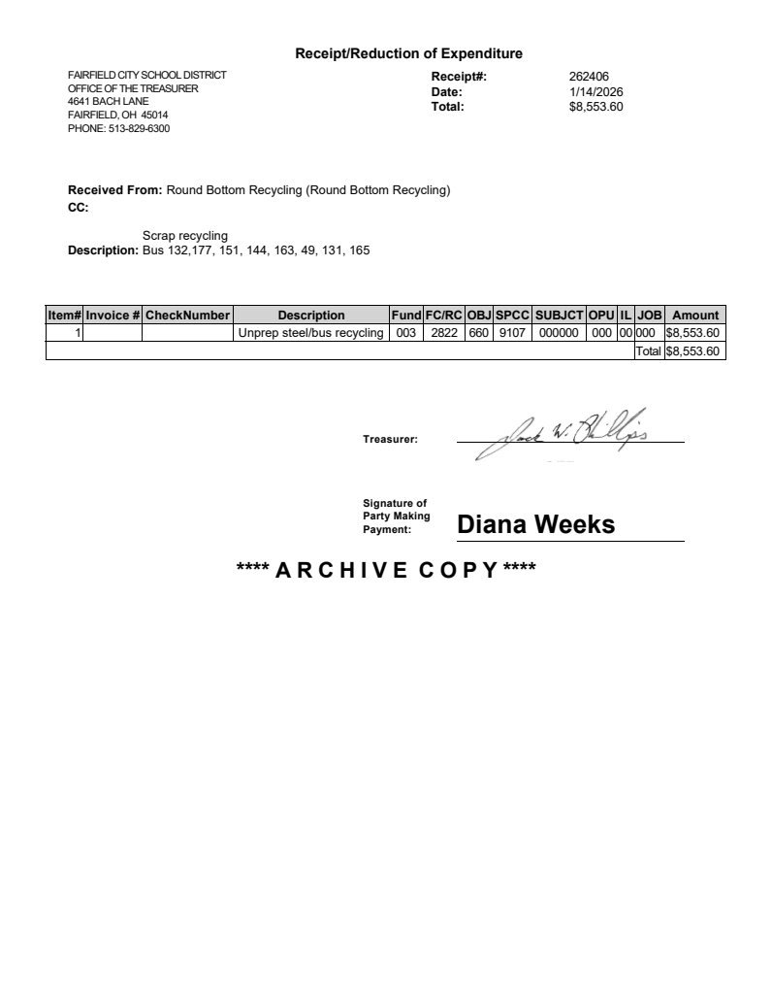
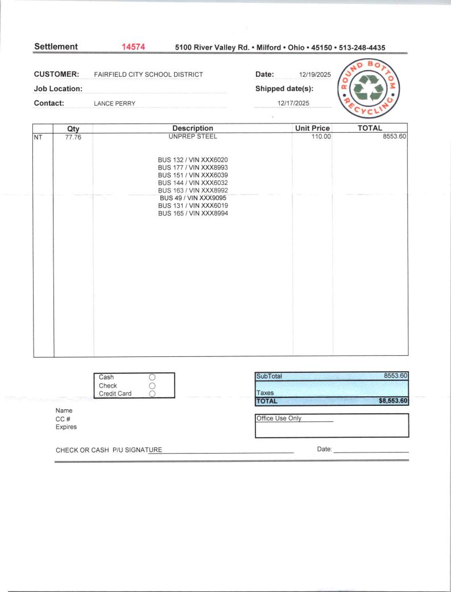

Source exhibit
Buses - scrap receipt.pdf
Source SHA-256: 0e508ec5a52f69ab8c124bc84bd9ef7ecefa3366dc35cac1fd67098362af5132
Page 1

Extracted text · page 1
Treasurer: Signature of Party Making Payment: Diana Weeks Item# Invoice # CheckNumber Description Fund FC/RC OBJ SPCC SUBJCT OPU IL JOB Amount 1 Unprep steel/bus recycling 003 2822 660 9107 000000 000 00 000 $8,553.60 Total $8,553.60 **** A R C H I V E C O P Y **** Receipt/Reduction of Expenditure FAIRFIELD CITY SCHOOL DISTRICT OFFICE OF THE TREASURER 4641 BACH LANE FAIRFIELD, OH 45014 PHONE: 5138296300 Receipt#: 262406 Date: 1/14/2026 Total: $8,553.60 Received From: Round Bottom Recycling (Round Bottom Recycling) CC: Description: Scrap recycling Bus 132,177, 151, 144, 163, 49, 131, 165
Page 2
